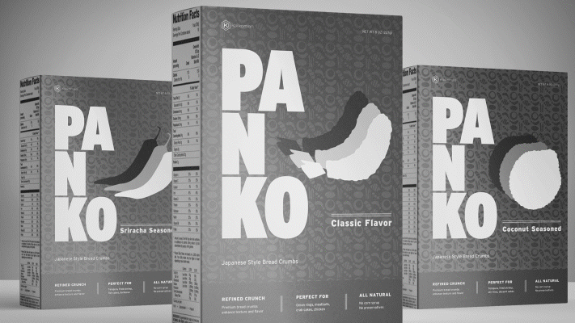
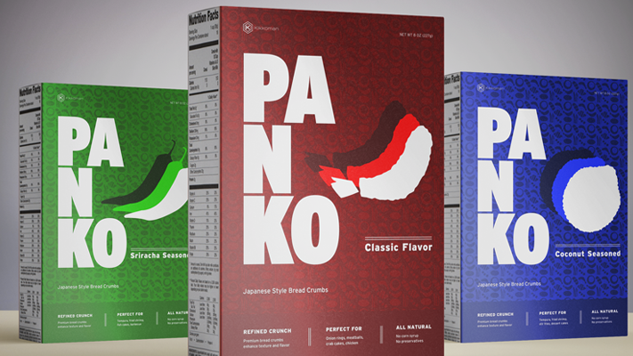

Packaging Design
An updated look for the classic breadcrumb brand. Work was done primarily in Adobe Illustrator. Pattern design, typography, branding, illustration.
Hi, I’m Casey, a designer and programmer in Madison, Wisconsin. Here are some work samples of past projects; don’t hesitate to reach out if anything looks interesting!
An updated look for the classic breadcrumb brand. Work was done primarily in Adobe Illustrator. Pattern design, typography, branding, illustration.
A brand overhaul for a nature preserve, including logo, web design, brand system guidelines, and additional collateral. Illustrator, Photoshop, InDesign.
Here is a description of this project. A second sentence about the project. Skills used include a skill, another skill, and the third skill.